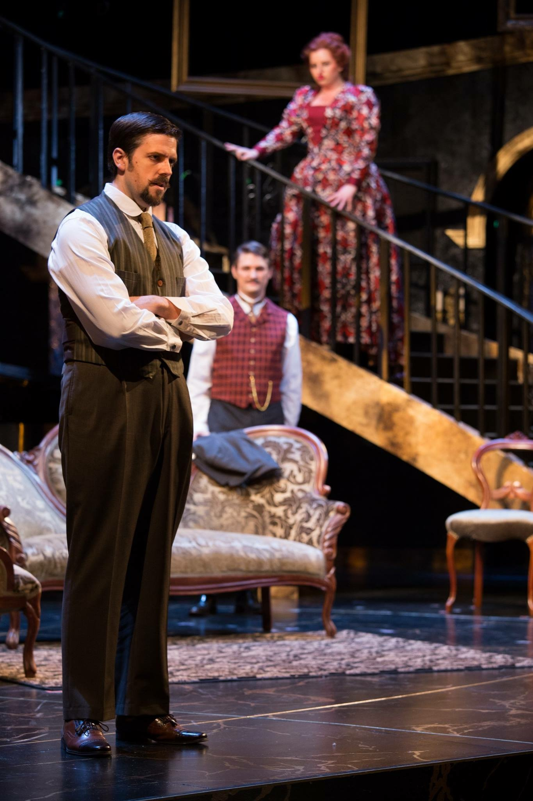
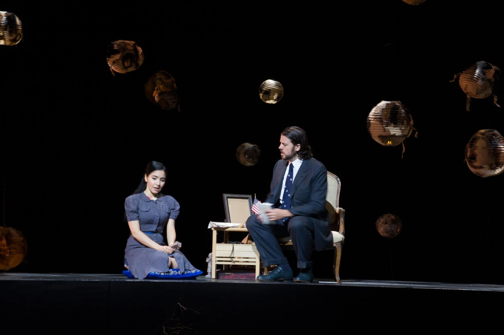
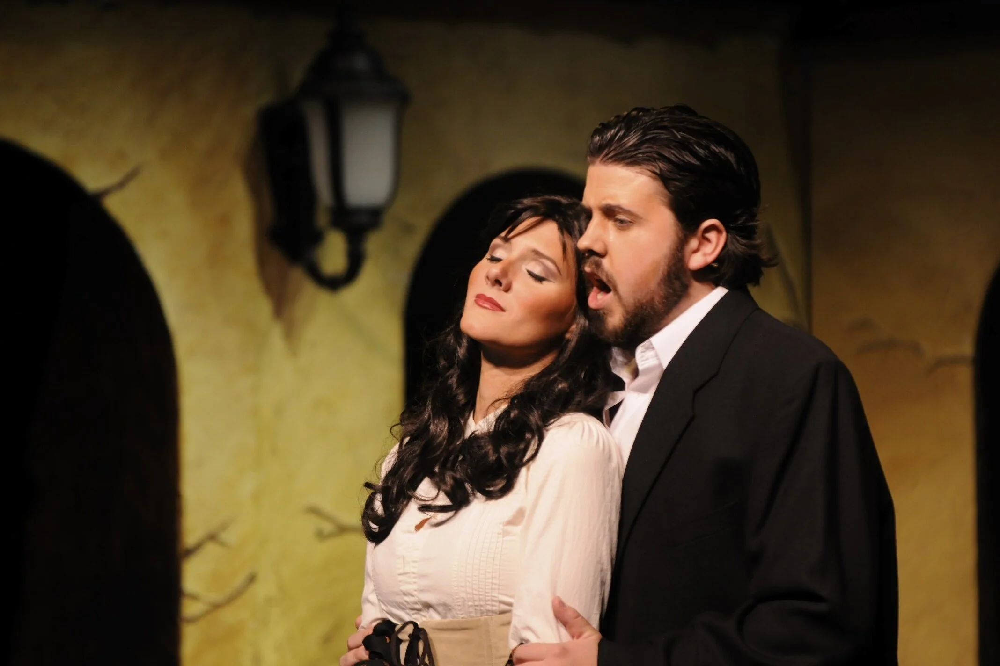
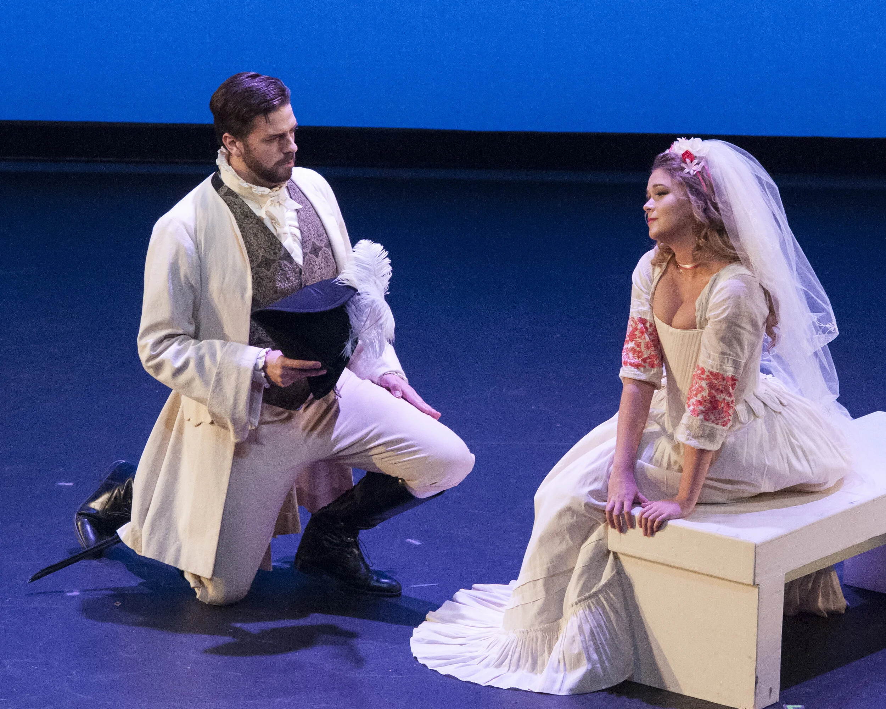
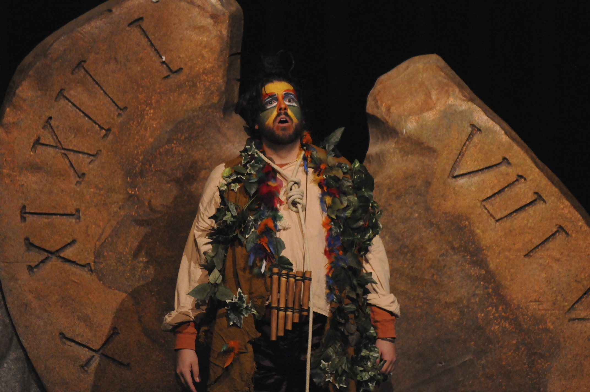
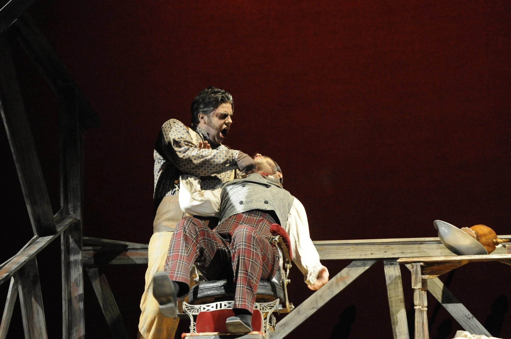
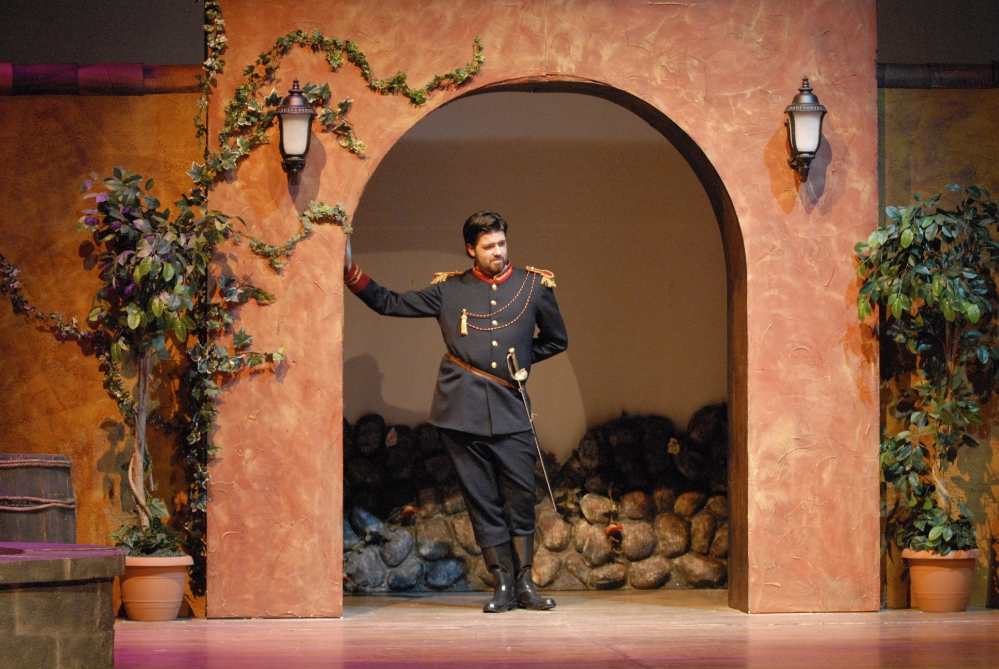

Baritone · Singing Actor
Performance
Recordings, production photographs, and credits in opera, musical theatre, and concert repertoire.
Recordings Production photos Credits Distinctions Curriculum vitae
Recordings
Selected live recordings from recital, opera, and concert.
Litany
0:00
Pretty Women
0:00
The Phantom
0:00
Ein deutsches Requiem — Mvt. VI
0:00
Die zwei blauen Augen von meinem Schatz
0:00
Madama Butterfly — Act III Trio
0:00
L'assiolo canta
0:00
La Coccinelle
0:00
Production photographs

Regina · Oscar Hubbard

Madama Butterfly · Sharpless

Luisa Fernanda · Vidal Hernando

Don Giovanni · Title Role

Die Zauberflöte · Papageno

Gianni Schicchi · Title Role

L'Incoronazione di Poppea · Seneca

Sweeney Todd · Title Role

L'elisir d'amore · Belcore
Select a photograph for production details.
Credits
Selected credits, most recent first. Directing credits are on the Directing page. The complete record is in the curriculum vitae.Training & Education
| Doctor of Musical Arts | Voice/Opera | University of Maryland | 2016 |
| Master of Music | Voice | University of Oklahoma | 2013 |
| Bachelor of Music | Choral Music Education | Utah State University | 2011 |
| Bachelor of Music | Vocal Performance | Utah State University | 2010 |
Artist training
Wolf Trap Opera2016
Maryland Opera Studio2014–2016
Charlottesville Opera2015
Castleton Festival2014
NYC Audition Boot Camp2013
Utah Festival Opera & Musical Theatre2007–2010
Opera · Performer
| Oscar Hubbard | Regina | Maryland Opera Studio | 2016 |
| Papageno | Die Zauberflöte | Maryland Opera Studio | 2016 |
| Don Giovanni | Don Giovanni | Maryland Opera Studio | 2015 |
| Ollie Jr. | A Family Reunion | Maryland Opera Studio | 2015 |
| Sharpless | Madama Butterfly | Charlottesville Opera | 2015 |
| Sharpless | Madama Butterfly | Castleton Festival | 2014 |
| Falstaff | Falstaff | University of Oklahoma | 2013 |
| Thoas | Iphigénie en Tauride | University of Oklahoma | 2013 |
| Seneca | L'incoronazione di Poppea | University of Oklahoma | 2011 |
| Papageno | Die Zauberflöte | Utah State University | 2011 |
| Sweeney Todd | Sweeney Todd | Utah State University | 2010 |
| Gianni Schicchi | Gianni Schicchi | Utah State University | 2010 |
| Rambaldo | La rondine | Utah State University | 2009 |
| Vidal Hernando | Luisa Fernanda | Utah State University | 2008 |
| Belcore | L'elisir d'amore | Utah State University | 2007 |
| Father / Peter | Hansel & Gretel | Utah State University | 2007 |
| Top | The Tender Land | Utah State University | 2006 |
Musical Theatre · Performer
| Angus Tuck | Tuck Everlasting | Sandy Arts | 2026 |
| Russian Soloist | Fiddler on the Roof | Centerpoint Theatre | 2026 |
| Harry Bright | Mamma Mia! | Riverside Productions | 2025 |
| Sir Harry | Once Upon a Mattress | Community Performance Series | 2022 |
| Andrew Carnes | Oklahoma! | Sundance Summer Theatre | 2019 |
| Chauvelin | The Scarlet Pimpernel | Cache Regional Theatre | 2010 |
| Franz | The Sound of Music | Utah Festival Opera & Musical Theatre | 2010 |
| Joseph Hewes | 1776 | Utah Festival Opera & Musical Theatre | 2008 |
| Pastey | Gypsy | Utah Festival Opera & Musical Theatre | 2008 |
| Pasquale | The Most Happy Fella | Utah Festival Opera & Musical Theatre | 2007 |
| Windy | Show Boat | Utah Festival Opera & Musical Theatre | 2007 |
| Officer Krupke | West Side Story | Utah Festival Opera & Musical Theatre | 2007 |
Concert & Oratorio · Performer
| Haydn | The Creation | Corvallis Repertory Singers | 2019 |
| Brahms | Ein Deutsches Requiem | University of Maryland | 2015 |
| Fauré | Requiem | Grace Church, Alexandria | 2015 |
| Britten | War Requiem | The Baltimore Symphony | 2014 |
| Saint-Saëns | Christmas Oratorio | Silver Spring United Methodist | 2014 |
| Beethoven | Symphony No. 9 | University of Oklahoma | 2013 |
| Rutter | Mass of the Children / Gloria | Tulsa Oratorio Chorus | 2012 |
| Vaughan Williams | Hodie | Tulsa Oratorio Chorus | 2012 |
| Mendelssohn | Die erste Walpurgisnacht | University of Oklahoma | 2011 |
| Haydn | Nicolaimesse | University of Oklahoma | 2011 |
| Beethoven | Symphony No. 9 | Utah State University | 2009 |
Recitals · Performer
| Faculty Showcase | The Crane School of Music | 2021 |
| Voice Area Faculty Recital | Oregon State University | 2020 |
| DMA General RecitalMahler, Lieder eines fahrenden GesellenMusto, Shadow of the BluesSantoliquido, I canti della seraSaint-Saëns, selected mélodies | University of Maryland | 2015 |
| DMA Lecture RecitalThe Frailty of Days: A Study of Thomas Hardy’s Impact on Gerald Finzi’s Song CompositionFinzi, Earth and Air and Rain | University of Maryland | 2014 |
| MM RecitalSchumann, Liederkreis, Op. 24 (selections)Fauré, L’horizon chimériqueFinzi, Earth and Air and Rain | University of Oklahoma | 2013 |
| BM Senior RecitalRavel, Don Quichotte à DulcinéeBeethoven, Sechs Lieder von GellertKeel, Salt Water Ballads, Set IIves, songsLadino folk songs (arr. Neumann)Gounod, Faust (aria)Myers, selections from They Said… | Utah State University | 2009 |
| BM Junior RecitalJoint recital with Landon Smith, tenorSchubert, selected LiederMozart, Le nozze di Figaro (aria)Poulenc, Chansons gaillardesButterworth, Six Songs from A Shropshire LadBizet, Les pêcheurs de perles (duet) | Utah State University | 2008 |
| BM Sophomore RecitalJoint recital with Mary Jane Castleton-Lee | Utah State University | 2007 |
Repertoire · Baritone
Also available as a repertoire list (PDF).
Opera arias
| Mozart | Madamina! Il catalogo è questo | Don Giovanni |
| Mozart | Non più andrai | Le nozze di Figaro |
| Mozart | Hai già vinta la causa (Vedrò mentr’io sospiro) | Le nozze di Figaro |
| Mozart | Der Vogelfänger bin ich ja | Die Zauberflöte |
| Mozart | Ein Mädchen oder Weibchen | Die Zauberflöte |
| Verdi | Di Provenza il mar, il suol | La traviata |
| Verdi | Ehi! Paggio... / Ehi! Taverniere... | Falstaff |
| Donizetti | Vien, Leonora | La Favorita |
| Donizetti | Come Paride vezzoso | L’elisir d’amore |
| Rossini | Largo al factotum | Il barbiere di Siviglia |
| Rossini | Sois immobile | Guillaume Tell |
| Bellini | Ah! Per sempre io ti perdei | I puritani |
| Puccini | Ah, che zucconi! | Gianni Schicchi |
| Puccini | Questo amor | Edgar |
| Leoncavallo | Zazà, piccola zingara | Zazà |
| Leoncavallo | Si può? Si può? (Prologue) | Pagliacci |
| Wagner | O du mein holder Abendstern | Tannhäuser |
| Korngold | Pierrot’s Tanzlied | Die tote Stadt |
| Gounod | Avant de quitter ces lieux | Faust |
| Thomas | O vin, dissipe la tristesse | Hamlet |
| Offenbach | Scintille, diamant | Les contes d’Hoffmann |
| Massenet | Vision fugitive | Hérodiade |
| Gluck | Dieux, qui me poursuivez | Iphigénie en Tauride |
| Tchaikovsky | Onegin’s Aria | Yevgeny Onegin |
| Tchaikovsky | Prince Yeletsky’s Aria | Pikovaya dama |
| Britten | Look, through the port comes the moonshine astray | Billy Budd |
| Heggie | Starbuck’s Aria | Moby-Dick |
| Heggie | A Warm Night | Dead Man Walking |
Concert and oratorio (solo)
| Brahms | Ein deutsches Requiem | University of Maryland, 2015 |
| Haydn | The Creation | Corvallis Repertory Singers, 2019 |
| Saint-Saëns | Christmas Oratorio | Silver Spring United Methodist, 2014 |
| Rutter | Gloria | Calvary Lutheran Church, 2014 |
| Beethoven | Symphony No. 9 | University of Oklahoma, 2013; Utah State University, 2009 |
| Vaughan Williams | Hodie | Tulsa Oratorio Chorus, 2012 |
| Rutter | Mass of the Children | Tulsa Oratorio Chorus, 2012 |
| Handel | Messiah | Westminster Presbyterian, 2011 |
| Mendelssohn | Die erste Walpurgisnacht | University of Oklahoma, 2011 |
| Haydn | Nicolaimesse | University of Oklahoma, 2011 |
| Fauré | Requiem | |
| Duruflé | Requiem |
Song cycles
| Schumann | Dichterliebe; Liederkreis, Op. 24 |
| Mahler | Lieder eines fahrenden Gesellen |
| Beethoven | Sechs Lieder von Gellert |
| Ravel | Don Quichotte à Dulcinée |
| Poulenc | Chansons gaillardes |
| Fauré | L’horizon chimérique |
| Butterworth | Six Songs from A Shropshire Lad; Bredon Hill and Other Songs |
| Finzi | Earth and Air and Rain |
| Keel | Salt Water Ballads, Set I |
| Santoliquido | I canti della sera |
| Musto | Shadow of the Blues |
| Heggie | For a Look or a Touch |
| Cipullo | Another Reason I Don’t Keep a Gun in the House |
| Laitman | Men with Small Heads |
| Myers | They Said... Vol. I |
Individual art songs
| Schubert | An Silvia; Litanei; Die Forelle; Erlkönig; Schäfers Klagelied; An die Musik; Die Taubenpost |
| Korngold | Glückwunsch; Der Kranke; Alt-spanisch; Old English Song |
| Fauré | Les berceaux; Au cimetière; Mai; Nell |
| Saint-Saëns | Chanson à boire du vieux temps; La cloche; La coccinelle; Le pas d’armes du roi Jean; Danse macabre; La cigale et la fourmi |
| Ibert | Chanson à Dulcinée; Chanson du duc |
| Donaudy | Amorosi miei giorni |
| Neumann | Scalerica de oro; Montañas altas; Durme, durme |
| Vaughan Williams | Silent Noon; The Call; Linden Lea; The Vagabond |
| Ireland | Sea Fever |
| Head | The Twins |
| Ives | Ann Street; Charlie Rutlage; The Greatest Man; Thoreau |
| Copland | I Bought Me a Cat; The Golden Willow Tree; The Boatmen’s Dance |
| Bolcom | The Song of Black Max; Waitin’; Amor |
Ensemble and chorus
| Opera choruses | La traviata, Il barbiere di Siviglia, Aida, Il trovatore |
| Choral works | Verdi Requiem, Mozart Requiem, Fauré Requiem, Duruflé Requiem, Handel Messiah, Haydn The Creation, Britten War Requiem |
Musical theatre and CCM
| Roles | Angus Tuck (Tuck Everlasting); Russian Soloist (Fiddler on the Roof); Sweeney Todd (Sweeney Todd); Sir Harry (Once Upon a Mattress); Andrew Carnes (Oklahoma!); Chauvelin (The Scarlet Pimpernel); Franz (The Sound of Music); Joseph Hewes (1776); Pasquale (The Most Happy Fella); Windy (Show Boat); Pastey (Gypsy); Officer Krupke (West Side Story) |
| Selections | Life Is (Zorba), Kander & Ebb; It’s a Fish (The Apple Tree), Bock & Harnick; Man of La Mancha (I, Don Quixote), Leigh & Darion; Joey, Joey, Joey (The Most Happy Fella), Loesser; Lonely Town (On the Town), Bernstein, Comden & Green; Soliloquy (Carousel), Rodgers & Hammerstein; Nice Work If You Can Get It (Damsel in Distress, 1937), Gershwin & Gershwin; Easy to Love, Porter; Falcon in the Dive (The Scarlet Pimpernel), Wildhorn & Knighton; Where in the World? (The Secret Garden), Simon & Norman; Jeff Sums It Up (Tootsie), Yazbek; Charity (Daddy Long Legs), Gordon; It’s Hard to Speak My Heart (Parade), Brown; Gold Can Turn to Sand (Kristina), Andersson & Ulvaeus; Epiphany (Sweeney Todd), Sondheim; Marry Me a Little (Company), Sondheim; Being Alive (Company), Sondheim; Your Song (Moulin Rouge version), John & Taupin; Summer, Highland Falls, Joel; The Boxer, Simon; Beyond the Sea, Lasry, Trenet & Lawrence; I Guess That’s Why They Call It the Blues, John, Taupin & Johnstone; Birdhouse in Your Soul, They Might Be Giants; Right Before My Eyes (Ever After), Goldrich & Heisler; My Petersburg (Anastasia), Flaherty & Ahrens; The Man I’ll Never Be (Daddy Long Legs), Gordon; Where’s the Girl? (The Scarlet Pimpernel), Wildhorn & Knighton; All I Ever Wanted (The Prince of Egypt), Schwartz |
Distinctions
- 1st Place, Classical Singer University Competition, 2011
- 1st Place, NATS Student Auditions, Advanced, 2009 & 2010
- Winner, USU Concerto Competition, 2009 & 2011
- 3rd Place, Benton Schmidt Vocal Competition, 2011
- Finalist, MONC Auditions, Utah District, 2008–2010
- WCFCA Opera Fellowship, University of Oklahoma
- Teaching Assistantship, University of Maryland
- Marie Eccles Caine Opera Quartet Scholarship
Artistic Affiliates
Coaches
- Elizabeth Avery
- Stephen Carey
- David Hanlon
- Miah Im
- Lynn Jemison-Keisker
- Benedicte Jourdois
- Justina Lee
- David Mayfield
- Bradley Moore
- Shelby Rhoades
- Stephanie Rhodes
- Lorne Richstone
- Ben Salisbury
Conductors
- Andy Anderson
- Sergio Bernal
- Barbara Day-Turner
- Nathan Fifeld
- Steven Jarvi
- Craig Jessop
- Karen Keltner
- Craig Kier
- Bradley Moore
- Jonathan Shames
- Tim Sharp
- Richard Zielinski
Stage Directors
- Colin Baldy
- Amanda Consol
- Andrea Dorf-McGray
- Kevin Doyle
- William Ferrara
- Rachel Harris
- Daniel Helfgot
- James Marvel
- Dan Rigazzi
- Michael Shell
- Jack Shouse
- Tomer Zvulun
Masterclasses
- Colin Baldy
- Deb Birnbaum
- Lauren Flanigan
- Marilyn Horne
- Stephen King
- Cynthia Lawrence
- Stanford Olsen
- Mark Padmore
Production
- Composer
- Libretto
- Composed
- Company
- Year performed